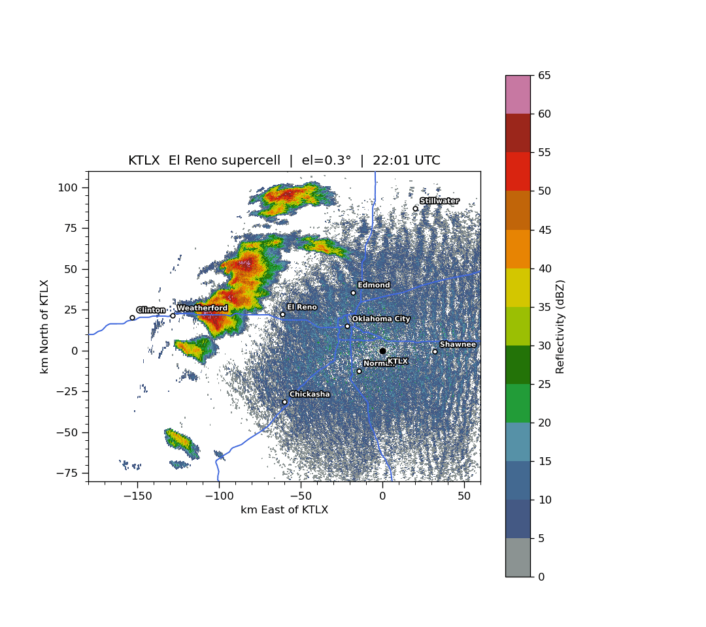

Isaac Langan
I'm a student at Northern Illinois University pursuing degrees in Meteorology (B.S.) and Mathematics, and an S-STEM Scholar in the BELONG in STEM program. I'm also a College of DuPage alumnus with three associate degrees and highest honors.
I like tornadoes and want to learn more about them. I want to find out how tornado trends are shifting with climate change. I am also interested in high-latitude climates. I enjoy the challenge of problem solving, finding solutions to complex issues, and seeing what math can do (it's the language of science after all!). I want to study tornadic supercells or severe convective storms, though I would never pass on the opportunity to go to Antarctica to study high-latitude climates.
Projects
CM1 storm simulation and Python visualization
A CM1 simulation using a personal computer and grid stretching to make the most of the available computing power. Python was used to make a six-panel animation of the full 3,600-second run, showing reflectivity, pressure and vorticity at 25 m, vertical velocity at 2,954 m, column-maximum vertical velocity, and 2–5 km updraft helicity.
Tools: CM1; Python (xarray/netCDF4, NumPy/SciPy, matplotlib)
Radar visualization in Python

An animation of KTLX reflectivity from the El Reno supercell, made in Python to practice working with radar data. The plots overlay cities and highways and show distance from the radar in kilometers.
Tools: Python
Skills
Working knowledge: Python (MetPy, Herbie, xarray, NumPy, SciPy, matplotlib), CM1, GRIB2, netCDF, atmospheric data visualization
Learning: GrADS
Systems and tools: Linux (Arch, Linux Mint, Ubuntu/Debian), Tailscale, self-hosting, Git and GitHub
ORCID · LinkedIn